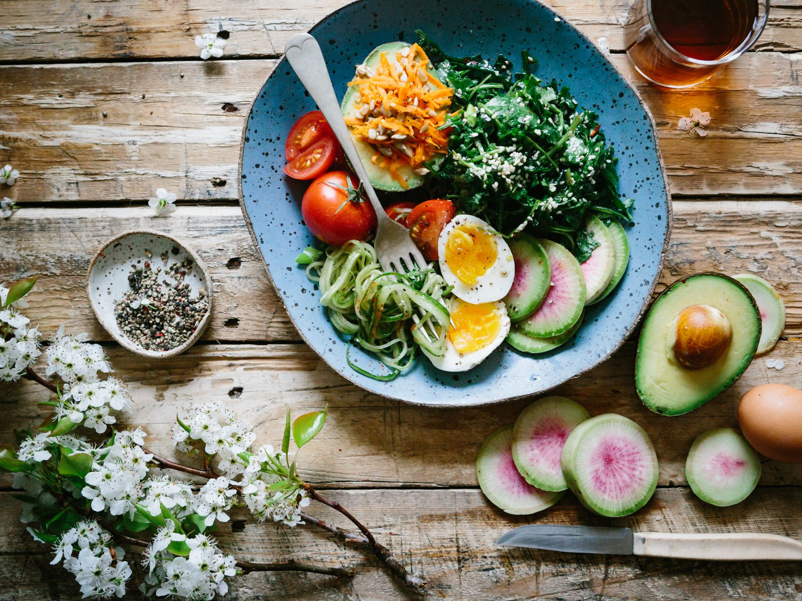
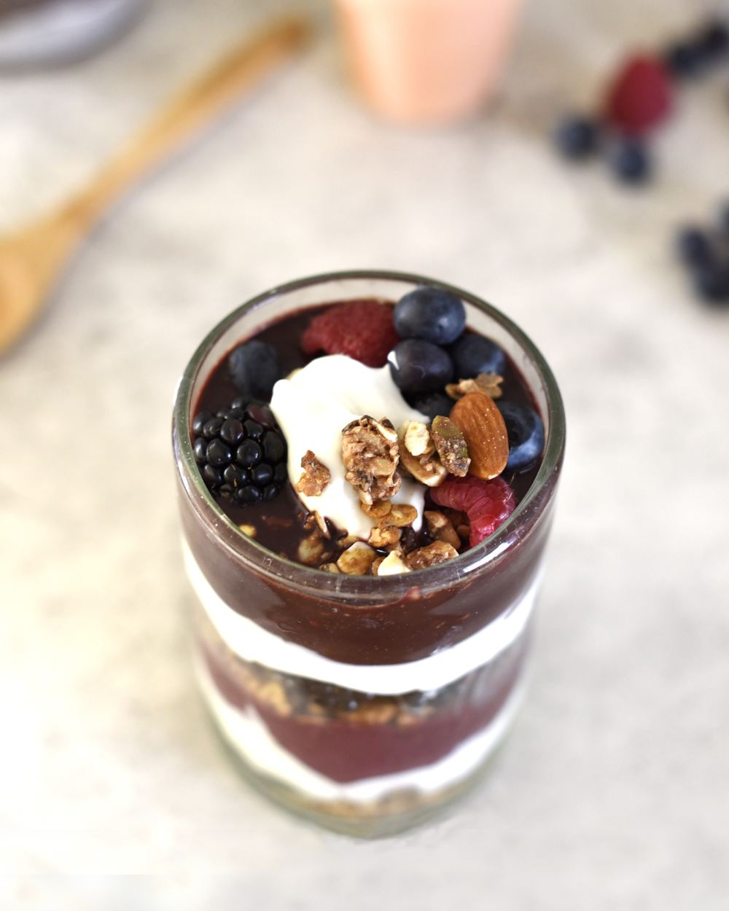
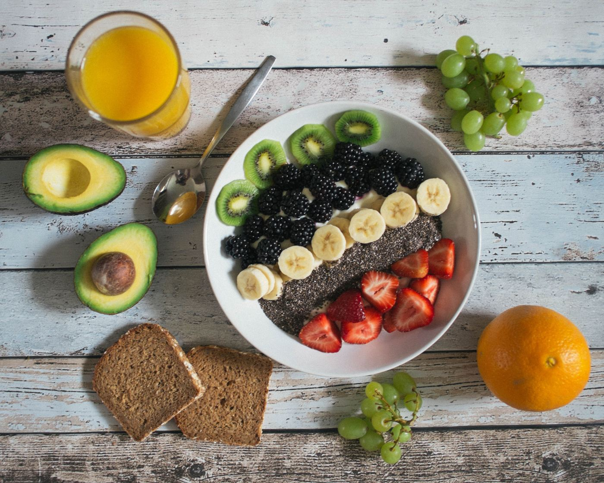
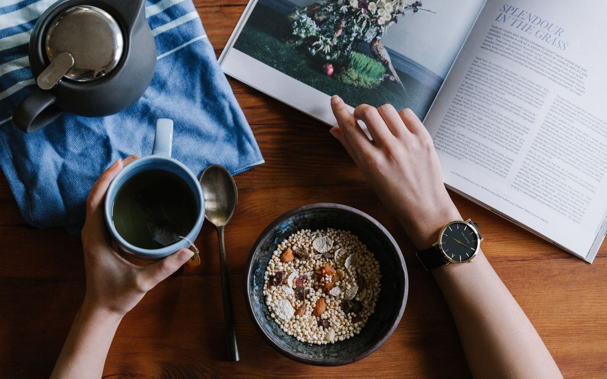

Jídelníček podle Vaší krve. Tempo podle Vašeho života.
Pomáhám najít zdravý životní styl, který vydrží. Váš plán Metabolic Balance® vychází z 36 hodnot krve, zdravotního stavu a Vašich cílů – a já Vás jím provedu krok za krokem, aby všechno dávalo smysl.


Poznáváte se v tom?
- Vyzkoušeli jste už několik diet, ale váha se po čase vrátila zpátky.
- Odpoledne Vám dochází energie a doháníte ji kávou nebo něčím sladkým.
- Mezi prací, rodinou a povinnostmi nezbývá čas myslet na sebe.
- Z tolika rad o jídle už nevíte, čemu vlastně věřit.
Metabolic Balance® nestaví na obecných doporučeních. Vychází z rozboru Vaší krve, takže dostanete plán, který je opravdu jen Váš – a k tomu člověka, který Vás jím provede.
Jak program Metabolic Balance® funguje
Cílem je upravit metabolismus tak, aby tělo přirozeně dosáhlo optimální hmotnosti a udrželo si ji. Program podporuje i trávení, hormonální rovnováhu a celkovou vitalitu.
-
Rozbor krve
Z 36 laboratorních hodnot, zdravotního dotazníku a Vašich cílů zjistíme, co Vaše tělo potřebuje.
-
Plán na míru
Dostanete osobní jídelníček se seznamem vhodných potravin, jejich kombinacemi a doporučenými porcemi.
-
Čtyři fáze s podporou
Programem projdeme společně během 7 konzultací. Mezi nimi jsem Vám k dispozici na WhatsAppu.
-
Udržení výsledku
V udržovací fázi si osvojíte principy, ke kterým se můžete kdykoli vrátit – bez jojo efektu.
- 36
- hodnot krve pro Váš plán
- 7
- konzultací osobně nebo online
- 3–6
- měsíců trvá program
- 24 h
- nejdéle čekáte na odpověď
Program jsem si prošla sama. Dvakrát.
Poprvé jsem vážila 98 kg a „neviděla jsem to“. Podruhé jsem začínala po porodu, s miminkem a úplně jiným denním režimem. Obě cesty mě naučily, že změna nepotřebuje dokonalé podmínky.
Můj tehdejší život stál na přejídání, spoustě piva a téměř žádném pohybu. Přestala jsem kupovat oblečení a kupovala jen boty – velikost nohy se neměnila. Až při prohlížení fotek jsem uviděla realitu a řekla si, že takhle to dál nejde.
Začátky nebyly lehké. První týden jsem byla unavená a pochybovala, jestli to zvládnu. Pak jsem se postavila na váhu: 3 kg dole. To mě nakoplo. Přišla energie, chuť se hýbat a znovu naplno žít.
Po porodu jsem si plán znovu připnula na lednici. Tentokrát s miminkem a méně časem – a rok po porodu vážím 72 kg. Největší radost mi ale nedělá číslo na váze, ale to, že jsem zase spokojená ve svém těle.
assets/img/aneta.jpg
Jmenuji se Aneta
Jsem výživová poradkyně Metabolic Balance®. K této práci mě nepřivedl jen zájem o výživu, ale hlavně vlastní zkušenost. Díky programu jsem zhubla 30 kg, měla výrazně víc energie a postupně kompletně změnila svůj životní styl.
Nevěřím na univerzální řešení. Každý z nás má jiné návyky, možnosti i cíle. Jako maminka malé dcery vím, jak těžké je myslet na sebe mezi rodinou, prací a povinnostmi – proto hledám cestu, která funguje v reálném životě, nejen na papíře.
Nechci Vám jen předat plán. Chci, abyste rozuměli, proč jednotlivé změny děláme, naučili se vnímat potřeby svého těla a vytvořili si návyky, které udržíte.
Vím, jaké to je stát na začátku. A vím, jak skvělý pocit přijde, když se člověk začne ve svém těle cítit lépe.

Průběh spolupráce
Sedm setkání po 30 minutách, osobně nebo online – podle toho, co Vám vyhovuje.
1Úvodní konzultacezačátek spolupráce
Vysvětlím Vám, jak program funguje. Společně vyplníme Váš osobní profil – zdravotní stav, potíže, případně léky. Změříme Vás na váze Tanita, nastavíme reálný a zdravotně bezpečný cíl a dostanete seznam krevních hodnot potřebných pro plán na míru. Na závěr podepíšeme smlouvu a program uhradíte.
2Předání plánupo výsledcích krve
Plán dostanete v tištěné podobě a podrobně spolu projdeme 1. a 2. fázi programu. Poradím Vám s výběrem potravin i jejich přípravou.
3První kontrolazhruba 14 dní po předání plánu
Probereme, jak probíhá 1. a 2. fáze, zhodnotíme Váš celkový stav a proběhne kontrolní vážení a měření. Podle potřeby předám 3. fázi a vysvětlím, jak v těle fungují sacharidy.
4Kontrola a 3. fáze4–6 týdnů po předání plánu
Zhodnotíme celkový stav, proběhne vážení a měření. Pomohu pojmenovat případné potíže a jejich příznaky a doporučím vhodné sportovní aktivity.
5–7Individuální kontrolypodle Vašeho tempa
Každé setkání zaměříme na Vaše potřeby a pokrok, vždy s vážením a měřením. Po dosažení cíle Vám předám 4., udržovací fázi programu.
Ceník
Jedna cena za celý program. Uhradíte ji na úvodní konzultaci po podpisu smlouvy.
Program Metabolic Balance®
17 000 Kč
- 7 konzultací po 30 minutách, osobně nebo online (3–6 měsíců)
- Individuální výživový plán a průvodce programem
- Přístup do mobilní aplikace Metabolic Balance®
- Podpora přes WhatsApp s odpovědí do 24 hodin
- Metabolická kuchařka v elektronické podobě
Laboratorní odběry krve nejsou v ceně – podle odběrného místa stojí přibližně 900–1 200 Kč.
Rezervovat úvodní konzultaciČasté dotazy
Jak dlouho program trvá?
Zpravidla 3 až 6 měsíců. Záleží na Vašem cíli a tempu – sedm konzultací rozložíme podle toho, jak budete postupovat.
Jsou krevní odběry zahrnuté v ceně?
Ne. Odběry si hradíte zvlášť v laboratoři, podle odběrného místa přibližně 900–1 200 Kč. Seznam potřebných hodnot dostanete na úvodní konzultaci.
Můžu konzultace absolvovat online?
Ano. Každou konzultaci můžete mít osobně nebo online, podle toho, co Vám vyhovuje.
Co když si mezi schůzkami nebudu vědět rady?
Napište mi na WhatsApp – odpovídám nejpozději do 24 hodin. Svůj plán máte navíc stále po ruce v mobilní aplikaci.
Je program vhodný pro kojící maminky?
Ne, pro kojící ženy program vhodný není. Ráda se s Vámi spojím, až budete mít kojení za sebou.
Zkušenosti klientů
[Text reference klientky – doplňte skutečný ohlas.]
[Text reference klienta – doplňte skutečný ohlas.]
[Text reference klientky – doplňte skutečný ohlas.]
[Text reference klientky – doplňte skutečný ohlas.]

Udělejte první krok
Napište mi pár slov o sobě a o tom, co byste chtěli změnit. Ozvu se a domluvíme úvodní konzultaci osobně nebo online.
- Telefon a WhatsApp[+420 000 000 000]
- E-mail[info@vase-domena.cz]
- Konzultace[Město, adresa] nebo online